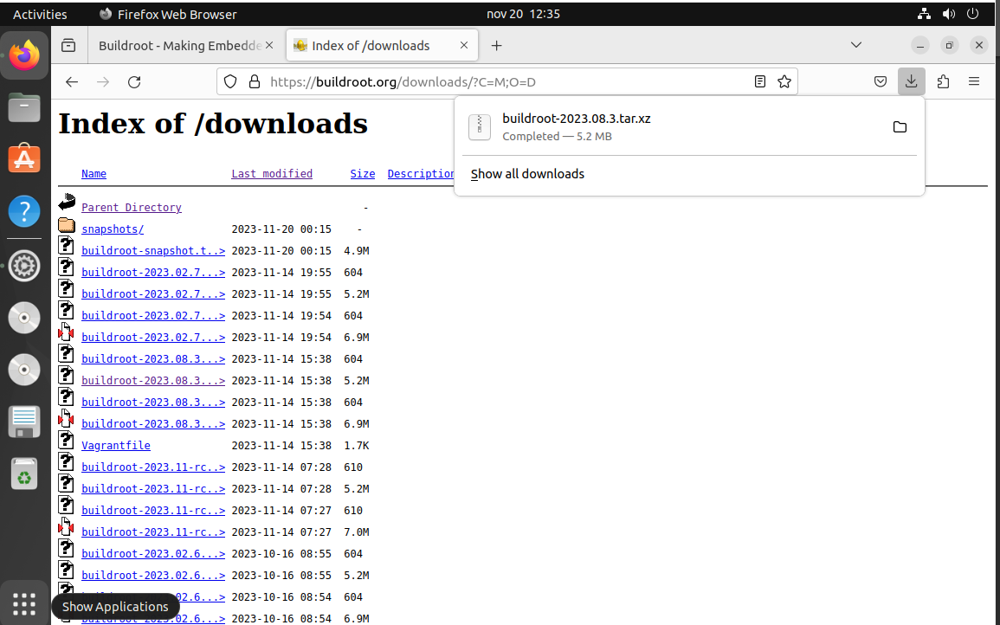
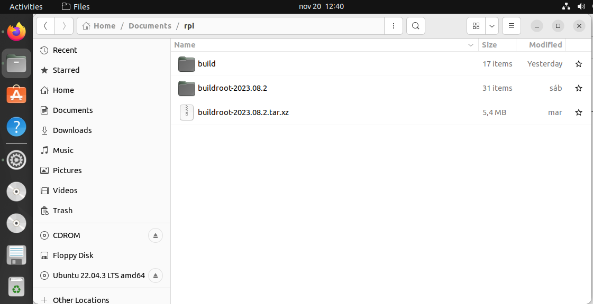
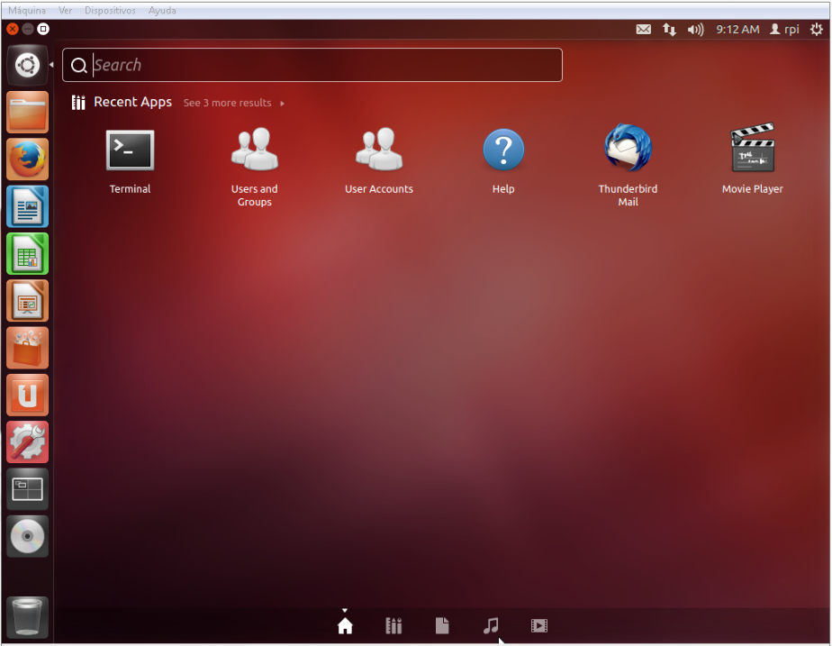

Building linux using buildroot
Elements needed for the execution of these LABS
In order to execute this lab properly, you need the following elements:
The VMware player software version 16.0 or above. Available at www.wmware.com (free download and use). This software has already been installed on the laboratory desktop computer.
A VMWare virtual machine with Ubuntu 22.04 and all the software packages installed is already available on the Desktop. This virtual machine is available for your personal use. If you want to set up your virtual machine by yourself, follow the instructions provided in Annex I.
A Raspberry Pi, accessories and a USB cable are available at the laboratory.
Basic knowledge of Linux commands.
Starting the VMware
Start VMware Player and open the RPI Virtual Machine. Wait until the welcome screen is displayed (see Fig. 1 and Fig. 2). Login as “ubuntu” user using the password “ubuntu”.

Fig. 1: Main screen of VMware player with some VM available to be executed.

Fig. 2: Ubuntu Virtual Machine login screen.
Open the Firefox web browser and download from https://buildroot.org/, the version identified as buidlroot2023-08-3 (use the download link, see Fig. 3, and navigate searching for earlier releases if necessary, https://buildroot.org/downloads/ ). Save the file to the Documents folder in your account (Fig. 4).

Fig. 3 Buildroot home page.
Buildroot is a tool to generate embedded Linux systems in our PC, and then this Linux will be installed in the target.
{kind=link}
Fig. 4: Example of Downloading buildroot source code.
Create a folder “rpi” in “Documentes”. Copy the file to the “Documents/rpi” folder and decompress the file (Fig. 5).
{kind=link}
Fig. 5: Buildroot folder (the folder name depends on the version downloaded).
Right-click in the window and execute “Open in Terminal” or execute the Terminal application from Dash home as shown in Fig. 6 (if “Open in Terminal” is not available, search how to install it in Ubuntu).
{kind=link}
Fig. 6: Dash home, Terminal application
In some seconds, a command window is displayed. Then, execute these commands:
[Help]: For this course, you will need to become familiar with the Linux Terminal use. On the Moodle site of this course, you can find a cheat sheet with the basic Linux commands. |
|
|---|---|
[Help]: In a Linux terminal, the “TAB” key helps you to autocomplete the commands, folders, and file names. You can find a description of “make” application at this link https://www.gnu.org/software/make/manual/make.pdf |
|
|---|---|
In some seconds, you will see a new window similar to Fig. 7.

Fig. 7: Buildroot setup screen.
Configuring Buildroot for RPI3.
Once the Buildroot configuration is started, it is necessary to configure the different items. You need to navigate the different menus and select the installation elements. Table I contains the specific configuration of Buildroot for installing it in the Raspberry Pi. Depending on the downloaded version, the organization and the items displayed can differ. If an item of buildroot configuration does not appear in the Table I leaves it with its default value.
[Help]: The Buildroot configuration is an iterative process. In order to set up your embedded Linux system, you will need to execute the configuration several times. |
|
|---|---|
Main Item |
Subitem |
Value |
Comments |
|---|---|---|---|
T arget options |
Target A rchitecture |
AArch64 (little endian) |
ARM 64 bits |
Target A rchitecture Variant |
Cortex-A53 |
||
Flo ating-point strategy |
VFPv4 |
||
MMU Page Size |
4kB |
||
Target Binary Format |
elf |
||
Tool chain |
Cross Compiler, linker, and libraries to be built to compile our embedded application |
||
Toolchain Type |
Buildroot toolchain |
The Embedded system will be compiled with tools integrated into Buildroot |
|
Custom toolchain vendor name |
buidlroot |
||
C library |
glibc |
Library containing the typical C libraries used in Linux environments (stdlib, stdio, etc) |
|
Kernel Headers |
Same as kernel being built |
||
Custom Kernel Headers Series |
5.10.x |
||
Binutils Version |
binutils 2.40 |
Binutils contains tools to manage the binary files obtained in the compilation of the different applications |
|
GCC compiler Version |
gcc 12.x |
GCC tools version to be installed |
|
Enable C++ support |
Yes |
Including support for C++ programming, compiling, and linking. |
|
Build cross gdb for the host |
yes Add Python support |
Includes the support for GDB. GCC debugger. |
|
GDB debugger version |
Gdb 11.x |
||
Build op tions |
Default values |
How Buildroot will build the code. Leave default values. |
|
System C onfigur ation* |
|||
Root filesystem skeleton |
Default target skeleton |
Linux folder organization for the embedded system |
|
System Hostname |
buildroot |
Name of the embedded system |
|
System Banner |
Linux RPI 3 |
Banner |
|
Passwords encoding |
sha-256 |
||
Init System |
Busybox |
||
/dev management |
Dynamic using devtmpfs + mdev |
||
Path to permissions table |
sy stem/device_table.txt |
Text files with permissions for /dev files |
|
Enable root login with password |
Yes |
||
Root password |
rpi |
||
/bin/sh |
Busybox’ default shell |
||
Run a getty: Port to run a getty |
tty PORT: console Keep kernel default vt100 |
Linux device file with the port to run getty (login) process. |
|
remount root filesystem read-write during boot |
Yes |
||
Network interface to configure trough DHCP |
eth0 |
||
Set the system’s default PATH |
/bin:/ sbin:/usr/bin:/usr/sbin |
||
Purge unwanted locales |
Yes |
||
Custom scripts to run before creating filesystem images |
<path_to_ buidlroot>/board/raspbe rrypi3-64/post-build.sh |
<p ath_to_buidlroot> path where buildroot source is |
|
Custom scripts to run inside the fakeroot environment |
|||
Custom scripts to run after creating filesystem images |
<path_to_ buidlroot>/board/raspbe rrypi3-64/post-image.sh |
||
Linux K ernel |
|||
Kernel Version |
Custom tarball |
||
URL of custom kernel tarball |
$(call github, raspberrypi,linux,0b54d bda3cca2beb51e236a25738 784e90853b64)/linux-0b5 4dbda3cca2beb51e236a257 38784e90853b64.tar.gz |
||
Kernel co nfiguration |
Using and in-tree defconfig file |
||
Defconfig name |
bcmrpi3 |
||
Kernel binary format |
Image |
||
Kernel compression format |
Gzip compression |
||
Build a Device Tree Blob (DTB) |
yes |
||
In-tree Device Tree Source file names |
b roadcom/bcm2710-rpi-3-b broadc om/bcm2710-rpi-3-b-plus b roadcom/bcm2837-rpi-3-b |
||
Need host OpenSSL |
Yes |
||
Linux Kernel Extensions |
Nothing |
||
Linux Kernel Tools |
Nothing |
||
Target Pac kages* |
|||
Busybox |
yes |
||
Busybox co nfiguration file to use |
package/b usybox/busybox.config |
||
Audio and video a pplications |
Default values |
||
C ompresssors and de compressors |
Default values |
||
Debugging, profiling and benchmark |
gdb, gdbserver |
||
D evelopments tools |
Default values |
||
Filesystem and flash utilities |
Default values |
||
Games |
Default values |
||
Graphic libraries and a pplications (gr aphic/text) |
Default values |
||
Hardware handling |
F irmware->rpi-firmware rpi 0/1/2/3 (bootcode.bin, Default, Extended) Path to a file stores as boot/config.txt board/raspberrypi3- 64/config_3_64bit.txt Path to a file stored as boot/cmdline.txt board/ra spberrypi/cmdline.txt install DTB overlays |
||
I nterpreters language and scripting |
Default values |
||
Libraries |
|||
Mi scellaneous |
Default |
||
Networking a pplications |
ifupdown scripts open ssh |
||
Package managers Real Time Shell and utilities System Tools Text Editors and viewers |
Default |
||
Fil esystem I mages |
|||
ext2/3/4 root filesystem |
ext4 exact size 400M Compression method no compression Remaining values-> default |
||
tar the root filesystem |
no compression |
||
Host util ities |
|||
host genimage |
Yes |
||
host dosfstools |
Yes |
||
host mtools |
Yes |
||
Host enviro nment-setup |
Yes |
||
Legacy config op tions* |
Default values |
Once you have configured all the menus, you need to exit, saving the values (File->Quit).
[Help]: The Buildroot configuration is stored in a file named “.config”. You should have a backup of this file. |
|
|---|---|
Compiling buildroot
In the Terminal Window executes the following command:
If everything is correct, you will see a final window similar to the one represented in Fig. 8.
[Time for this step]: In this step, buildroot will connect, using the internet, to different repositories. After downloading the code, Buildroot will compile the applications and generate a lot of files and folders. Depending on your internet speed access and the configuration chosen, this step could take up to one hour and a half. |
|
|---|---|
Warning. If you have errors in the buildroot configuration, you could obtain errors in this compilation phase. Check your configuration correctly. Use “make clean” to clean up your partial compilation. |
|
|---|---|
Warning. dl subfolder in your buildroot folder contains all the packages downloaded for the internet. If you want to move your buildroot configuration from one computer to another, avoiding the copy of the virtual machine, you can copy this folder. |
|
|---|---|

Fig. 8: Successful compilation and installation of Buildroot
Buildroot has generated some folders with different files and subfolders containing the tools for generating your Embedded Linux System. The next paragraph explains the main outputs obtained,
Buildroot Output.
The main output files of the execution of the previous steps can be located in the folder “./images”. Fig. 9 summarizes the use of Buildroot. Buildroot generates a bootloader, a kernel image, and a file system.
Fig. 9: Schematic representation of the Buildroot tool. Buildroot generates the root file system, the kernel image, the bootloader, and the toolchain. Figure copied from “Bootlin” training materials (http://bootlin.com/training/)
In our specific case, the folder content is shown in Fig. 10

Fig. 10: The images folder contains the binary files for our embedded system.
Copy the sdcard.img file to your SDcard using this Linux command in the Buildroot folder (sdb is typically the device assigned to the sdcard, unless you have other removable devices connected to the system):
$ sudo dd if=./images/sdcard.img of=/dev/sd<x> bs=10M //<x> is the identification used by Linux for your microSD card, tipically “b” or “c”, never use “a” because this is the operating system hardisk
Remember to format again the microSDcard if you need to repeat this process (linux gparted is an excellent tool to partition and format the SD card).